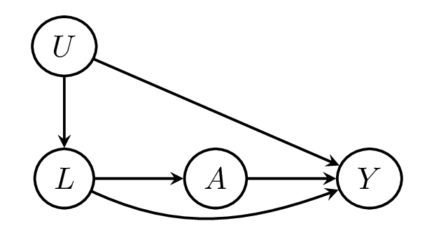

![]()
| \(A_0\) | \(L_1\) | \(A_1\) | \(E(Y\mid A_0, L_1, A_1)\) | \(N\) |
|---|---|---|---|---|
| 0 | 0 | 0 | 50 | 6000 |
| 0 | 0 | 1 | 70 | 2000 |
| 0 | 1 | 0 | 200 | 2000 |
| 0 | 1 | 1 | 220 | 6000 |
| 1 | 0 | 0 | 230 | 3000 |
| 1 | 0 | 1 | 250 | 1000 |
| 1 | 1 | 0 | 130 | 3000 |
| 1 | 1 | 1 | 110 | 9000 |
We’ve all been there. Just working away on some tricky causal question, minding your own damn business, thinking maybe… just maybe… this time you’ve discovered some new insight and BAM! You realize that it was already covered in Robins 1986.
Robin’s g-computation algorithm, or as it is more commonly known, the g-formula, identifies the causal effect of a time-fixed or time-varying treatment under certain assumptions. It has been used to estimate the effects of interventions on coronary heart disease, respiratory disease, diabetes, mortality, and HIV.
The g-formula has several algebraically equivalent representations, namely:
- Non-iterated conditional expectation (NICE)
- Iterated conditional expectation (ICE)
- Inverse probability weighted expectation (IPW)
Setup and identification
To fix concepts, let’s start with the simple case of a single, binary, time-fixed treatment, \(A\), for which we have an outcome, \(Y\), measured at the end of follow up as well as covariates \(L\) which potentially confound the relationship between \(A\) and \(Y\). We’d like to estimate the effect of \(A\) on \(Y\). To help, we define \(Y^a\) as an individual’s potential outcome under an intervention which sets \(A\) to \(a\). Our interest then is in causal effects such as the average treatment effect, i.e. \[E(Y^{a=1} - Y^{a=0})\] which can be expressed as a contrast between potential outcomes under different values of treatment.

To identify effects, we require the following assumptions
- Exchangeability: \[Y^{a} \perp\!\!\!\perp A \mid L\]
- Consistency: \[Y^{a} = Y \text{ if } A = a\]
- Positivity: \[1 > \Pr(A = a \mid L = l) > 0\]
These assumptions are described in exquisite detail in Hernan and Robins, but briefly: the first assumption implies that, conditional on \(L\), those who aretreated and untreated are exchangeable with respect to \(Y\). Graphically, this condition implies that all backdoor paths between \(A\) and \(Y\) are blocked by conditioning on \(L\), with the crucial assumption being that there are no unmeasured variables \(U\) which are related to both \(A\) and \(Y\) that don’t pass through \(L\). The second assumption, consistency, implies that an individual’s observed outcome who received treatment \(A = a\) is in fact their potential outcome \(Y^a\). While this may seem tautological it may be violated if for instance there are hidden versions of treatment, such as when treatment is ill-defined or when there are network effects such that an individual’s potential outcome is affected by the treatment status of others. Finally, the third assumption, positivity, states that there must be a non-zero probability of observing treatment level \(A = a\) within all strata of \(L\).
Under these assumptions \(E(Y^a)\), the mean potential outcome under an intervention that sets \(A\) to \(a\), is identified by \[ \begin{aligned} E(Y^{a}) &\overset{(1)}{=} \sum_{l} E(Y^{a} \mid L = l) \Pr(L = l) \\ &\overset{(2)}{=} \sum_{l} E(Y^{a} \mid A = a, L = l) \Pr(L = l) \\ &\overset{(3)}{=} \sum_{l} E(Y \mid A = a, L = l) \Pr(L = l) \end{aligned} \] where the first line follows from the law of total probability, the second from the independence between \(Y^a\) and \(A\) after conditioning on \(L\), and the third from the consistency of potential outcomes. \[ E^{G,a'}(Y) = \sum_{l} E(Y \mid A = a', L = l) \Pr(L = l) \] This is the NICE representation of the g-formula and is perhaps the most well-known. It suggests that the mean potential outcome \(E(Y^a)\) is equal to the mean observed outcome among those with observed \(A\) equal to \(a\) within strata of covariates \(L\), necessary to ensure exchangeability, and then standardized tothe marginal (population) distribution of \(L\).
However, as shown in the appendix, by applying the rules of probability we find that the NICE expression is also equal to \[E_{L}\{E(Y \mid A = a, L = l)\}\] as well as \[E\left\{\frac{I(A = a)}{\Pr(A = a \mid L = l)} Y\right\}\] where the first is the ICE representation of the g-formula, a sequence of iterated expectations with the inner most conditional on the observed treatment \(A\) and covariates \(L\) and the outer with respect to \(L\). The second expression is the IPW representation which weights the outcome in those observed to have \(A = a\) by the inverse of the probability of receiving treatment level \(a\) conditional on \(L\).
Nonparametric estimation
If they are all algebraically equivalent why go through all the fuss? Can’t we just pick one and stick with it? In this section, we’ll see that when \(A\) and \(L\) are low-dimensional and/or have just a few discrete levels, we can plug-in nonparametric estimates of the components of each and all three estimators will yield the same result, in which case this sentiment may be valid. However, for most real-world applications \(A\) and \(L\) will be high-dimensional and/or include continuous variables and therefore we will have to specify models for the components, in which case they may diverge in which case each estimator may have different properties.
To illustrate, consider a two-time point sequentially randomized trial in which \(A_0\), \(L_1\), and \(A_1\) are binary variables such that we have 8 possible treatment and covariate strata, which can be summarized succinctly in the following Table
where \(N\) is the number of observations in each strata and \(E(Y \mid A_0, L_1, A_1)\) is the mean outcome in each strata. We’ll ignore sampling variability for now and consider the 32,000 people in this study to constitute the full population. We’d like to estimate the effect comparing the average potential outcomes if everyone were always treated versus never treated, i.e. \[E(Y^{1,1}) - E(Y^{0,0})\] To do so, we’ll need estimates of the marginal potential outcomes \(E(Y^{1,1})\) and \(E(Y^{0,0})\) which are identified by the g-formula. For now let’s focus on \(E(Y^{1,1})\) because, once we see an example, obtaining the other is trivial. In this case, because \(A_0\), \(L_1\), and \(A_0\) are low dimensional, we can estimate the NICE, ICE, and IPW representations of the g-formula directly by plugging in estimates of their components.
First, for the NICE plug-in estimator we need estimates of \(E(Y \mid A_0 = 1, L_1, A_1 = 1)\) and \(\Pr(L_1 \mid A_0 = 1)\). The former can be read directly from the table, the latter we can calculate from the numbers in each strata, i.e. \[ \begin{aligned} E(Y^{1,1}) &= \sum_{l_1}E(Y \mid A_1 = 1, L_1=l_1, A_0 = 1) \Pr(L_1 = l_1 \mid A_0 = 1) \\ &=110 \cdot \Pr(L_1 = 1 \mid A_0 = 1) + 250 \cdot \Pr(L_1 = 0 \mid A_0 = 1) \\ &= 110 \cdot \frac{9000 + 3000}{9000 + 3000 + 1000 + 3000} + 250 \cdot \frac{1000 + 3000}{9000 + 3000 + 1000 + 3000} \\ &= 145 \end{aligned} \] For the ICE plug-in estimator, we again need estimates of \(E(Y \mid A_0 = 1, L_1, A_1 = 1)\), but this time we’ll take a slightly different approach and to estimate the iterated expectation we’ll take a weighted average of the result over the distribution of \(L_1\) given \(A_0 = 1\), i.e. \[ \begin{aligned} E(Y^{1,1}) &= E_{L_1}\{E(Y \mid A_1 = 1, L_1=l_1, A_0 = 1) \mid A_0 = 1\} = \\ &=\frac{1}{\sum_{i=1}^n I(A_0 = 1)} \sum_{i=1}^n \bigg\{ E(Y \mid A_1 = 1, L_1=1, A_0 = 1) I(A_0 = 1, L_1 = 1) \\ &\qquad + E(Y \mid A_1 = 1, L_1=0, A_0 = 1) I(A_0 = 1, L_1 = 1)\bigg\} \\ &= \frac{1}{16000} \{110 \cdot (9000 + 3000) + 250 \cdot (1000 + 3000)\}\\ &= 145 \end{aligned} \] Finally for the IPW estimator, we need estimates of the probabilities of treatment given the past, \(\Pr(A_1 = 1 \mid L_1, A_0 = 1)\) and \(\Pr(A_0 = 1)\), which again we can calculate directly from the number in each strata. We then estimate the weighted expectation of the outcome weighted by the inverse probabilities of treatment, i.e. \[ \begin{aligned} E(Y^{1,1}) &= E\left\{ \frac{I(A_0 = 1, A_1 = 1)}{\Pr(A_1 = 1 \mid L_1 = l_1, A_0 = 1) \Pr(A_0 = 1)} Y\right\} = \\ &\quad= \frac{1}{n} \sum_{i=1}^n \bigg\{ \frac{I(A_0 = 1, L_1 = 1, A_1 = 1)}{\Pr(A_1 = 1 \mid L_1 = 1, A_0 = 1) \Pr(A_0 = 1)} Y \\ &\quad\quad + \frac{I(A_0 = 1, L_1 = 0, A_1 = 1)}{\Pr(A_1 = 1 \mid L_1 = 0, A_0 = 1) \Pr(A_0 = 1)} Y\bigg\} \\ &\quad= \frac{1}{32000}\left\{ \frac{9000}{1/2 \cdot 3/4}110 + \frac{1000}{1/2 \cdot 1/4}250\right\}\\ &\quad= \frac{1}{32000}\left\{ (24000)110 + (8000) 250\right\}\\ &\quad= 145 \end{aligned} \]
where \(\Pr(A_1 = 1 \mid L_1 = 1, A_0 = 1) = \frac{9000}{12000} = \frac{3}{4}\), \(\Pr(A_1 = 1 \mid L_1 = 0, A_0 = 1) = \frac{1000}{4000} = \frac{1}{4}\), and \(\Pr(A_0 = 1) = \frac{16000}{32000} = \frac{1}{2}\).
As expected the estimates from these three approaches coincide exactly when nonparametric estimation is feasible.
Parametric estimation
\[ \begin{aligned} \mu_{\overline{a}_k}(\overline{l}_k) &= E(Y \mid \overline{A}_k = \overline{a}_k, \overline{L}_k = \overline{l}_k) \\ \lambda(\overline{l}_k) &= \Pr(L_k = l_k \mid \overline{A}_{k-1} = \overline{a}_{k-1}, \overline{L}_{k-1} = \overline{l}_{k-1}) \\ \pi(\overline{l}_k) &= \Pr(A_k = 1 \mid \overline{A}_{k-1} = \overline{a}_{k-1}, \overline{L}_k = \overline{l}_k) \end{aligned} \]
\[\sum_{\forall \overline{l}_K}\mu_{\overline{a}_K}(\overline{l}_K; \widehat{\beta}) \prod_{i=1}^K \lambda(\overline{l}_i; \widehat{\gamma})\]
\[\frac{1}{n}\sum_{i=1}^n \mu_{a_0}(\ldots \mu_{a_{K-1}}(\mu_{\overline{a}_K}(\overline{l}_K; \widehat{\beta}_K), \overline{l}_{K-1}; \widehat{\beta}_{K-1})\ldots, l_0; \widehat{\beta}_0)\]
\[\frac{1}{n}\sum_{i=1}^n\frac{I(\overline{A}_K = \overline{a}_K)}{\prod_{i=1}^K\pi(\overline{l}_i; \widehat{\delta})} Y\]
Simulation
\[ \begin{aligned} L_0 &\sim \text{Normal}(0, 1) \\ A_0 &\sim \text{Bernoulli}(\operatorname{expit}\{-3 + L_0 + I(L_0 > 1)\}) \\ L_1 &\sim \text{Normal}(L_0 - A_0, 1) \\ A_1 &\sim \text{Bernoulli}(\operatorname{expit}\{-3 + 5 A_0 + L_1 + I(L_1 > 1) + I(L_0 > 1)\}) \\ Y &\sim \text{Normal}(L_1 + L_0 - A_0 - A_1 - 0.5 A_0 A_1, 1) \\ \end{aligned} \]
\[E(Y^{1, 1} - Y^{0, 0}) = -3.5\]
Let’s begin by simulating data from the generative model above in R.
Reuse
Citation
BibTeX citation:
@online{boyer2024,
author = {Boyer, Christopher},
title = {The Many Faces of the g-Formula},
date = {2024-02-16},
langid = {en}
}
For attribution, please cite this work as:
Boyer, Christopher. 2024. “The Many Faces of the
g-Formula.” February 16, 2024.